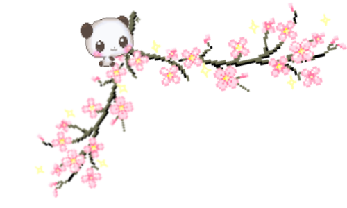

Time Traveling to 1920
Makeup
A sultry, evening look to match your 'do
All you need is a little lip liner, some falsies, and these ridiculously easy 10 steps, ahead.

You will need
 TRESemmé Heat Defence Spray
TRESemmé Heat Defence Spray
 VO5 Curl Defining Mousse
VO5 Curl Defining Mousse
 TONI&GUY Extreme Style Creation Hairspray
TONI&GUY Extreme Style Creation Hairspray
Brows.
Even though thin, arched brows were ~the~ shape of the ’20s, you definitely won’t need a pair of tweezers to pull off this look. Instead, darken the top line of your eyebrows with a pencil or powder formula to give the illusion of thinner arches.

Black eyes.
Using a fluffy eyeshadow brush, blend a matte-black eyeshadow across your lid and along your crease. It should look like a soft wash of color rather than a harsh black line.

Lower lashes.
Line your lower lashes with the same matte-black eyeshadow from step 2, smudging it out with a small pencil brush. Don’t worry about being too precise here—just work with a light hand and gently diffuse the shadow.

Eyeliner.
Next, line your eyes with a super-pigmented black pencil, using a mini makeup sponge (or your pencil brush from step 3) to gently blend. The smudgier, the better!

Eye gloss.
A ’20s-inspired makeup look is nothing without a glossy lid. Top off your black eyeshadow with a shiny gloss or just tap a lip balm along your lids with your fingertips.

Falsies.
Yes, you could just throw on a couple extra coats of mascara, but if you really want to drive this look home, go with a pair of falsies instead. Choose a lash strip that’s super fanned-out for a dramatic vibe.

Mascara.
Give your bottom lashes some love by coating them with a creamy black mascara. You’ll want to really layer it on for a piece-y, stuck-together look.

Concealer.
Dab concealer all over your lips to mask their natural shape. Yes, you’ll look a little bizarre, but it’ll all come together (promise).

Lip liner.
Exaggerate your Cupid’s bow with a bright-red lip liner. Then make your lips look full and pouty (and less wide) by cheating the sides and keeping the focus in the center. So, rather than line all the way to your outer corners, stop about halfway to totally reshape your lips.

Lipstick.
Bring the whole look together with a thick layer of burgundy lipstick.